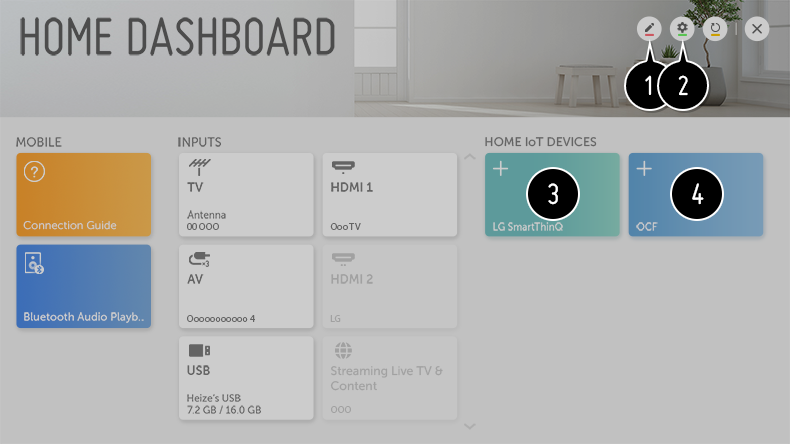

Uso de Dispositivos IoT para Home
Puede comprobar y controlar el estado del Dispositivos IoT para Home conectado.
- Instale la aplicación LG SmartThinQ en su teléfono inteligente.
- Inicie sesión en su cuenta de LG SmartThinQ y registre su dispositivo LG SmartThinQ.
-
Pulse el botón
 del mando a distancia y seleccione Panel de casa.
del mando a distancia y seleccione Panel de casa.
- Pulse el de la parte superior derecha para seleccionar la Cuenta LG SmartThinQ.
- Inicie sesión en su cuenta de LG SmartThinQ. Aparecerá una lista de los dispositivos LG SmartThinQ registrados.
Para registrar su Dispositivo compatible con OCF (Open Connectivity Foundation), seleccione la Guía de OCF para cambiar los ajustes indicados.
Si está controlando el dispositivo externo desde su aplicación móvil, es posible que no pueda controlar el dispositivo desde la TV. Cierre la aplicación móvil para controlarlo desde la TV.

- Es posible cambiar el nombre del dispositivo conectado a Dispositivos IoT para Home o PROGRAMA/OCULTAR el dispositivo.
-
Cuenta LG SmartThinQ
:
Se puede iniciar o cerrar sesión de la cuenta LG SmartThinQ que se ha creado en el móvil.
Conexión de OCF : Si se establece en Encendido, también se vincularán otros dispositivos compatibles con OCF.
Aviso : Si lo pone en Encendido, podrá recibir notificaciones sobre el estado del Dispositivos IoT para Home.
Conector de dispositivo : Puede iniciar la aplicación Conector de dispositivo. - Tras haber iniciado sesión, podrá mostrarse el dispositivo registrado en la cuenta LG SmartThinQ. Cuando el dispositivo aparece en la lista, la tarjeta desaparece.
- Puede conectar su propio Dispositivo compatible con OCF (Open Connectivity Foundation) a la TV para usarlo. Cuando el dispositivo esté bien conectado, la tarjeta desaparecerá.
Solo son compatibles algunos LG SmartThinQ y Dispositivo compatible con OCF (Open Connectivity Foundation), pero tenemos previsto ampliar la lista con otros dispositivos.